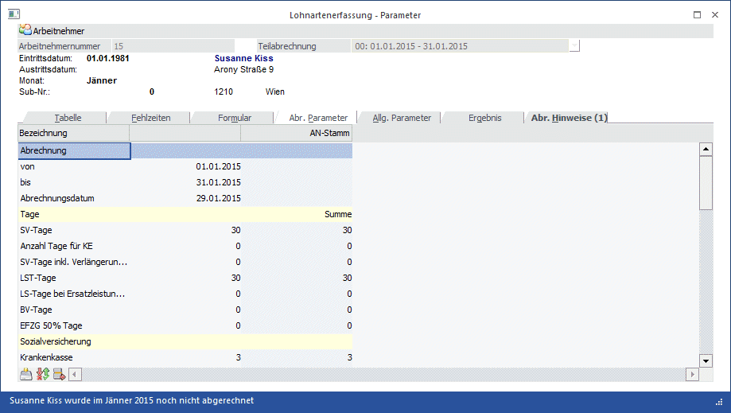

In diesem Fenster, dass über den Menüpunkt
1 Abrechnen
1 Einzelabrechnung
oder Schnellaufruf
1 STRG + E
durch Anwahl des Registers
1 Abr. Parameter
aufgerufen wird, können die Abrechnungsparameter pro Abrechnung eingestellt werden.

Grundsätzlich werden die Parameter pro Mandant gesetzt (siehe auch Kapitel Abrechnungs Parameter), gewisse Einstellungen müssen aber pro AN gesteuert werden:
Abrechnungsparameter
Die Abrechnungsparameter werden in einer Tabelle dargestellt und sind nach Themenbereich sortiert.
Abrechnung
Ø von
Beginn des Abrechnungszeitraums
Dieses Datum kann im Bedarfsfall manuell abgeändert werden, wenn dies der mBGM erfordert (zum Beispiel: Rückkehr nach langem Krankenstand). Durch abändern des Datums werden auch die Tage entsprechend aliquotiert.
Ø bis
Ende des Abrechnungszeitraums
Ø Abrechnungsdatum
Eingabe des Abrechnungsdatums. Es wird das Datum vorgeschlagen, das bei den mandantenspezifischen Parametern hinterlegt wurde.
Tage
Ø SV-Tage
Eingabe der sozialversicherungspflichtigen Tage des Abrechnungsmonats. Diese werden nur dann geändert, wenn während der Abrechnungsperiode ein Ein- oder Austritt stattgefunden hat, oder wenn der AN nicht sein gesamtes Entgelt bezogen hat (krankheitsbedingt). Ist der AN während des Monats eingetreten bzw. tritt der AN während des Monats aus, wird hier die richtige Anzahl der SV-Tage (berechnet aufgrund des Eintritts- bzw. Austrittsdatums) vorgeschlagen.
Ø Anzahl Tage für KE
Hier können die Tage für Kündigungsentschädigung hinterlegt werden.
Ø SV-Tage inkl. Verlängerungstage
Dieses Feld ist nur dann aktiv, wenn beim AN ein Austrittsdatum hinterlegt ist. Hier werden die SV-Tage eingetragen, die für die Abrechnung im Falle eines Austritts berücksichtigt werden müssen. Dabei werden auch Ersatzleistungstage mit eingerechnet (erhöht die Höchstbemessungsgrundlage). Die Anzahl der SV-Tage kann in diesem Fall auch größer 30 sein.
Ø LSt-Tage
Eingabe der lohnsteuerpflichtigen Tage für den Abrechnungsmonat. Grundsätzlich ist die Anzahl der LST-Tagen gleich den SV-Tagen. Ist der AN während des Monats eingetreten bzw. tritt der AN während des Monats aus, wird hier die richtige Anzahl der LSt-Tage (berechnet aufgrund des Eintritts- bzw. Austrittsdatums) vorgeschlagen.
Ø LSt-Tage bei Ersatzleistungen
Dieses Feld ist nur dann aktiv, wenn beim AN ein Austrittsdatum hinterlegt ist. Hier werden die Tage ausgewiesen, die für die Berechnung der LST relevant sind. Bei der Auszahlung von Ersatzleistungen muss die Lohnsteuer immer für den gesamten Monat berechnet werden, daher sollte in diesem Feld immer 30 stehen.
Ø BV-Tage
Hier kann die Anzahl der BV-Tage eingegeben werden. Dieses Feld wird nur dann vorbesetzt, wenn im AN-Stamm die Option "Betriebliche Vorsorge" aktiviert wurde und das Datum "BV-Beitrag ab" in bzw. vor der aktuellen Abrechnungsperiode liegt. Liegt das Datum in der aktuellen Abrechnungsperiode, dann werden ggf. auch noch die aliquoten Tage vom Programm automatisch berechnet.
Ø EFZ Tage (100
%)
EFZ Tage (50 %)
EFZ Tage (0%)
Informationsfelder für die Anzahl der Tage, in welchen 100 %, 50 % und 0 % Bezugsanspruch besteht. Wenn ein AN eine bestimmte Zeit über krank ist, dann bekommt er vom AG nur mehr die Hälfte des Bezugs bzw. in weiterer Folge gar nichts mehr (nur mehr von der GKK). Diese Bezüge für Teilentgelte müssen am JBGN gesondert ausgewiesen werden. Damit das so erfolgen kann, müssen hier die Tage eingegeben werden, für die Teilentgelte gezahlt wurden (im Normalfall muss nur das Feld mit LFZ Tage (50 %) gefüllt werden). Ab 01/2019 ist es nicht mehr zwingend erforderlich diese Tage bekanntzugeben.
Sozialversicherung
Ø Krankenkasse
Hier wird die Krankenkasse die im AN-Stamm hinterlegt ist vorgeschlagen.
Ø Service Entgelt:
Dieses Feld ist nur im November eines jeden Abrechnungsjahres aktiv. Hier wird das automatisch berechnete Service Entgelt ausgewiesen, wobei dieser Betrag noch manuell editiert werden kann.
Hinweis:
Das Service Entgelt wird von der Bemessungsgrundlage LST NZ abgezogen, da es sich um einen Pflichtbeitrag handelt.
Berechnung des Service Entgelts
Die Berechnung des Service Entgelts erfolgt nach folgenden Regeln:
ü Wenn der AN Geringfügig ist, wird kein Service Entgelt ermittelt.
ü Wenn das Eintrittsdatum nach dem 15.11. oder das Austrittsdatum (SV-rechtlich) vor dem 15.11. liegt, dann wird das Service Entgelt nicht berechnet (das Inaktiv-Kennzeichen wird in dem Fall nicht berücksichtigt).
ü Wenn beim AN eine Beitragsgruppe hinterlegt ist, wird - sofern diese Beitragsgruppe die Krankenversicherungsbeiträge enthält - für den AN und seine Angehörigen (bei denen keine KSG-Befreiung eingetragen ist) das Service Entgelt berechnet.
ü Bei einem AN mit Werksvertrag wird zusätzlich auf die Option " 8:sonstige Leistungen, die im Rahmen eines freien Dienstvertrages erbracht werden und der Versicherungspflicht gemäß § 4 Abs. 4 ASVG unterliegen" geprüft - nur wenn auch diese Option eingestellt ist, wird für den AN
Das Service Entgelt wird am Abrechnungsbeleg als eigene Lohnart ausgewiesen und vom Nettobetrag abgezogen.
Lohnsteuer
Ø Dienstgeberabgabe
Eingabe der Dienstgeberabgabe (U-Bahn-Steuer), den der Arbeitgeber für diesen Arbeitnehmer abführen muss. Standardmäßig wird hier - abhängig von der Einstellung im AN-Stamm - der Wert aus den "allgemeinen Abrechnungsparametern" übernommen. Wenn im AN-Stamm die Checkbox " DG-Abgabe (U-Bahn)" nicht aktiviert ist, bleibt der Wert auf 0.
Ø Pendlerpauschale
Hier werden die Einstellungen der Pendlerpauschale aus dem Arbeitnehmerstamm angezeigt und können für die geladene Abrechnung geändert werden.
Ø Werkverkehr
Mit dieser Checkbox kann gekennzeichnet werden, ob der Arbeitnehmer in der betroffenen Abrechnungsperiode am Werkverkehr teilgenommen hat oder nicht. Diese Checkbox wird mit der Einstellung aus dem Arbeitnehmerstamm - Register Lohnsteuer vorbelegt und kann noch übersteuert werden.